行业解析：数据库商业市场三问三答
数据库是组织正常运转所需要依赖的核心软件，其本身也是一门系统技术。从技术到产品，中间需要跨越可用性的沟堑，才有机会迈向商业成功的坦途。从初代产品到1984年的5.0版本，Oracle数据库历经7年才打磨出稳定运行的产品。我们认为真实的客户场景才能试炼出具备可用性和稳定性的软件产品。在本篇报告中，我们将从商业视角出发，对比当前中外数据库市场的格局，讨论中外数据库市场的差距，力求解析中国数据库市场的历史机遇与投资机会。
摘要
1)数据库市场呈现怎样的格局？数据库市场方兴未艾。从技术流行度视角看，关系模型在完备的数学理论支持下率先实现商业化，目前虽居第一但已向多模演进；云原生、New SQL、数据湖仓等路线热度升温；从商业化视角看，市场处在多种技术路线并存、格局未定的状态，云成为搅动市场格局的重要力量。
2)数据库的中外差距在何处？集中式关系型数据库的中外差距更为显著，一方面从发展史看，Oracle等海外龙头进入国内市场时产品已然成熟，而国内产品化刚处发轫之始，海外产品在实践中经受了重要场景锤炼、建立用户信任。另一方面，在商用市场，Oracle通过扩展SQL语言形成自己的“方言”体系掌握事实上的行业标准；在开源市场，收购MySQL助力其掌握开源社区的话语权。同时，通过加强运维及DBA人才培养加强内生造血能力；通过开展系列收并购活动丰富上下游适配，海外龙头以数据库为核心建立的生态圈已相对完善。
3)什么样的国产数据库厂家可以脱颖而出？我们认为，技术实力是数据库厂商的立身之本，在此基础之上，完善的服务体系和生态构建是从技术成功转化为商业成功必不可少的两大要素。
数据库市场呈现怎样的格局？
技术流行度视角：关系型数据模型仍居第一但已向多模演进；云原生、NewSQL、数据湖仓等技术路线热度升温。关系模型在完备的数学理论支持下最先实现商业化，并在超过50年的核心业务场景打磨之下趋于成熟。我们的统计数据显示，截至2022年4月底，在技术流行度口径下关系模型产品的份额达到72%；同时，目前已有近40%的关系型产品提供对于多模的支持，新兴技术路线的流行度排名也快速提升。
商业化视角：数据库市场处在多种技术路线并存、格局未定的状态，云成为搅动市场格局的重要力量。根据Gartner的数据，全球数据库市场规模从2017年至2021年以20%的CAGR高速增长至800亿美元。同时，我们观察到云原生、大数据项目、数据湖/仓库等路线带来了变革的力量，有的项目一经推出便很快进入市占率排行前列，比如2013年前后Hadoop路线下的Cloudera、2020年前后的Snowflake、Spark路线之下的Databricks.收入口径下，Gartner数据显示2021年云厂商Microsoft、AWS的市占率排名均已超过Oracle.全球数据库市场格局未定，云架构支撑的海量数据高性价比存储与分析成为影响市场格局的重要力量。
技术流行度视角：关系模型仍居榜首，新兴技术路线流星赶月
全球市场：云原生、NewSQL、湖仓一体等技术热度持续升温
图表：数据库系统流行度排名
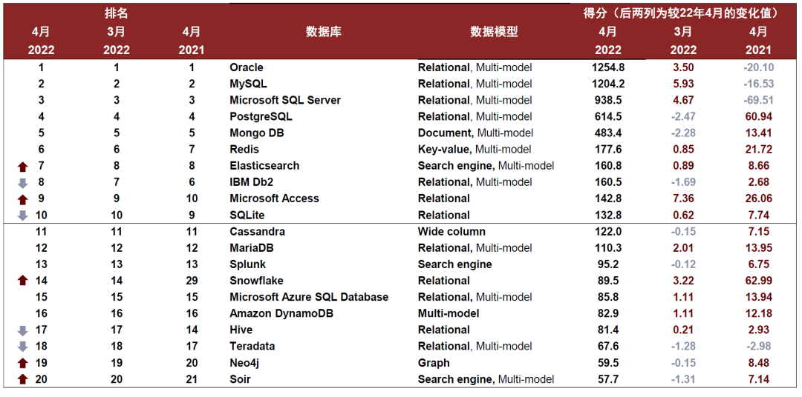
资料来源：DB-engines，中金公司研究部
注：统计时间截至2022/4/22，评价维度主要包括在网络/技术论坛中被讨论/提及的次数、就业机会的数量、在职专家人数等，具体标准参考DB-engines官网公示
在关系型技术路径上，开源的力量不容忽视，PostgreSQL与MySQL在全球范围内已然延展出两大产品家族。我们在《数据库系列报告开篇：技术路径复盘及展望》中提出开源思潮的流行影响数据库技术架构的迭代。在全球范围内，PostgreSQL与MySQL两大顶级开源关系型数据库项目深刻地影响着厂家的技术路线选择，并已然成长延伸出两大产品家族。
图表：开源数据库源流与发展：PostgreSQL图谱
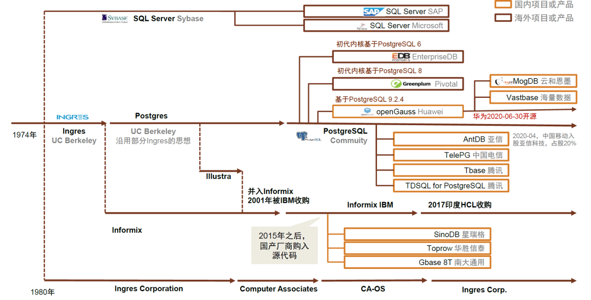
注：统计截至2022年2月底，具体信息以公司公告为准；
资料来源：墨天轮，PostgreSQL社区，openGauss社区，Greenplum社区，公司公告，中金公司研究部
图表：开源数据库源流与发展：MySQL图谱
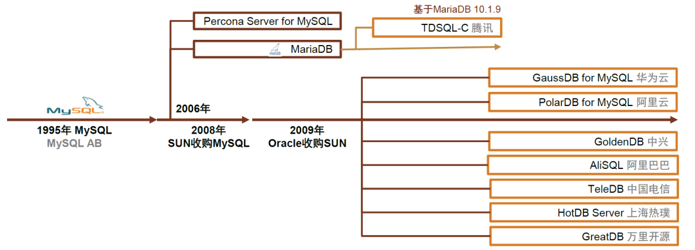
注：统计截至2022年2月底，具体信息以公司公告为准；
资料来源：墨天轮，MySQL社区，MariaDB社区，公司公告，中金公司研究部
2016年以来，云原生、NewSQL、湖仓一体等技术热度持续升温。虽然受限于发展历史较短，在流行度的绝对值上新兴技术尚无法和头部的成熟项目抗衡，但我们能看到2016年以后新技术路径发展势头迅猛。云原生领域，云原生数据仓库Snowflake是目前最炙手可热的数据库上市公司之一；NewSQL领域，Amazon Aurora、CockroachDB、TiDB是典型代表；而大数据领域，Spark SQL技术路线的流行度稳步上升，Databricks作为选择Spark路线的商业公司，伴随着湖仓一体概念的升温而受到资本市场热捧。
图表：近年云原生、NewSQL技术流行度不断升温
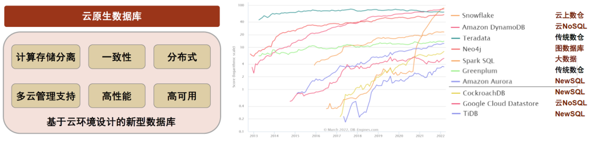
资料来源：DB-engines，中金公司研究部
注：统计时间截至2022/4/22，评价维度主要包括在网络/技术论坛中被讨论/提及的次数、就业机会的数量、在职专家人数等，具体标准参考DB-engines官网公示
国内市场：关系型路线占据主导，开源路线被广泛应用
从存量市场看，关系型路线仍占据主导，同时产品多基于开源技术二次开发而来。从技术流行度角度出发，国内数据库产品数据模型份额结构和全球市场趋势一致，呈现出关系型路线占主导、非关系型产品蓬勃发展的特点。
关系型路线占主导：关系模型的ACID特性助力其支撑核心事务场景，在国内数据库产品市场同样更为流行。根据信通院的统计数据，截至2021年中，关系型数据库数量占比约为60%。近些年，NoSQL路线在国内同样备受瞩目，以MongoDB、HBase、Redis为代表的开源路线在NoSQL系产品得到了广泛应用。
我国的关系型数据库产品广泛应用开源路线：我们将国内存量关系型数据库产品的技术路径做进一步分解，根据信通院的数据，关系型产品中分别有约30%、28%的产品由开源数据库PostgreSQL、MySQL二次开发而来。
图表：从技术流行度来看，关系型数据模型在国内外市场均占据主导地位(2021年)
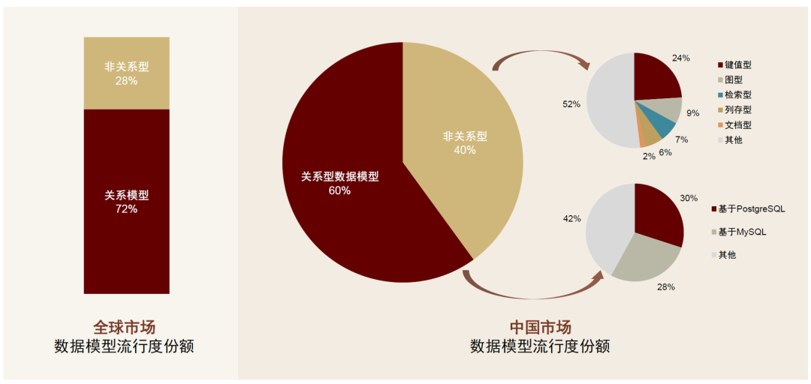
资料来源：DB-engines，工信部，中金公司研究部
注：统计时间截至2022/4/22，评价维度主要包括在网络/技术论坛中被讨论/提及的次数、就业机会的数量、在职专家人数等，具体标准参考DB-engines官网公示
商业化视角：数据市场方兴未艾，格局未定
全球市场：云成为变革市场格局的重要力量
全球数据库市场处在高速发展过程中，目前Microsoft、AWS、Oracle占据大半市场。根据Gartner的数据，从2017年到2021年，全球数据库市场以20%的年均复合增速维持高速增长；2021年市场规模接近800亿美元，同比增速超过22%。从格局来看，传统数据库龙头Oracle与全球云巨头Microsoft、AWS市占率位列行业前三。我们观察到自2018年以来，Oracle市占率略有下滑，云成为变革市场格局的重要力量。
图表：全球数据库市场维持高速增长，2017-2021
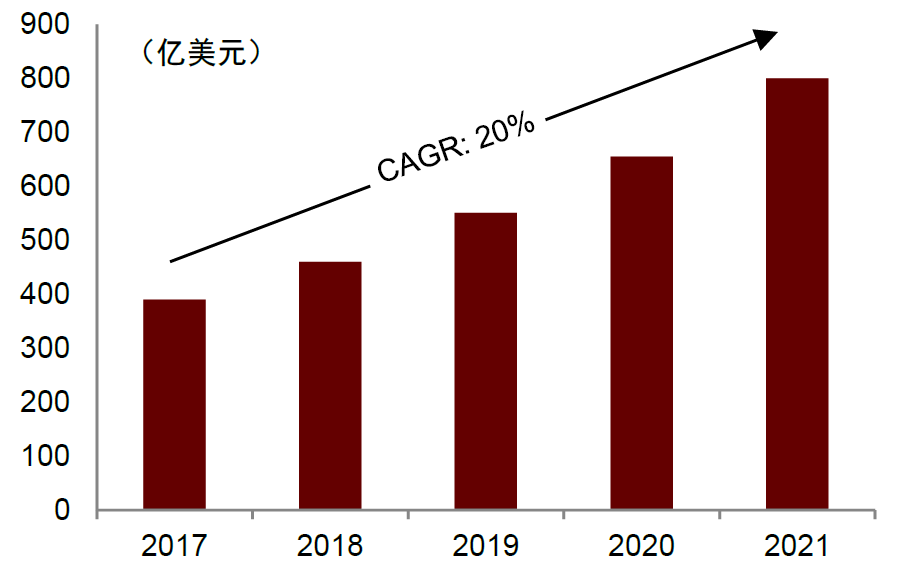
资料来源：Gartner，中金公司研究部
图表：2021年全球数据库厂商市场份额概览
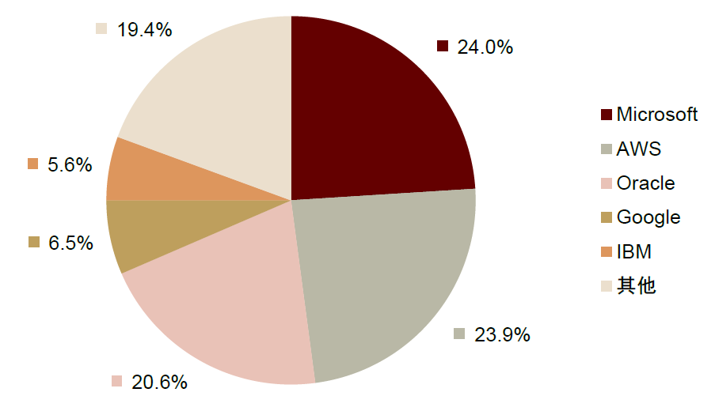
资料来源：Gartner，中金公司研究部
图表：2011-2021年数据库市场份额排名变迁
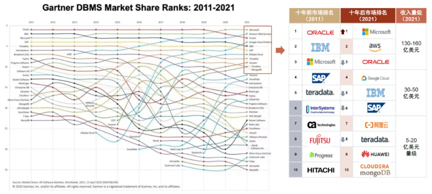
注：上图中的收入量级只统计数据库相关收入，具体数据以公司公告为准
资料来源：Gartner，各公司公告，中金公司研究部
头部NoSQL、大数据厂商收入增速快且备受资本市场关注。NoSQL、大数据领域的上市公司中，Cloudera营收规模最大，但近年增长放缓，而MongoDB、Elastic增速均在50%左右，Snowflake更是实现多年翻倍增长。资本市场高度关注新技术趋势厂商，如近年炙手可热的湖仓一体公司Databricks、图数据库项目Neo4j。
图表：头部NoSQL、大数据领域上市公司收入
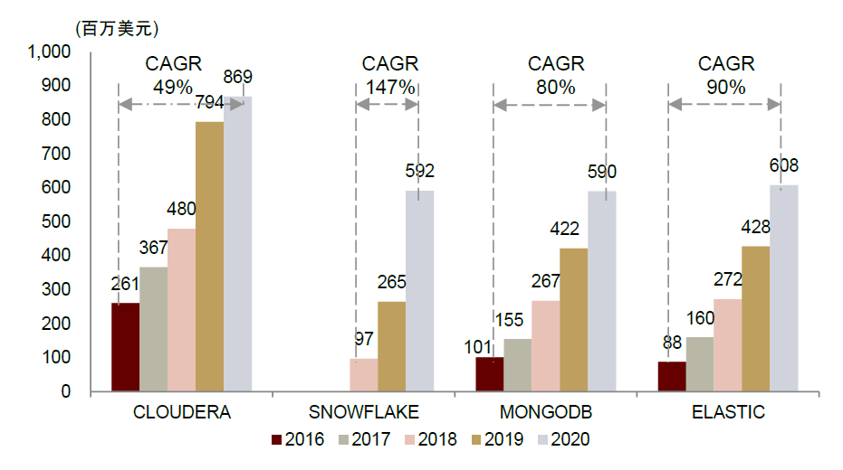
资料来源：Wind，中金公司研究部
注：Cloudera 2019年收入增长迅猛主要因为其收购了Hortonworks并表导致
图表：Databricks、Neo4j历史融资情况
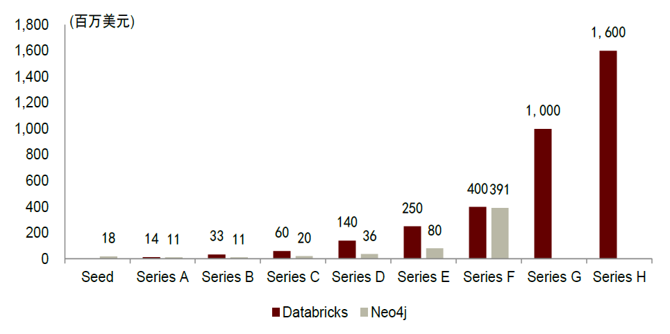
资料来源：FactSet，中金公司研究部
国内市场：海外厂家仍占主导，国产替代任重道远
海外厂家在国内数据库市场占据主导份额，国产替代任重道远。从收入口径看，海外厂家仍在我国数据库市场占据主要市场份额，其中Oracle又占据主导地位。根据IDC的最新数据，2021年本地部署的关系型数据库产品市场中，仅Oracle一家的市场份额即接近27%；在金融行业中，Oracle的主导地位尤为明显，根据信通院的数据，2020年其在金融行业占据55%的数据库市场。
图表：金融行业存量数据库系统格局，2020
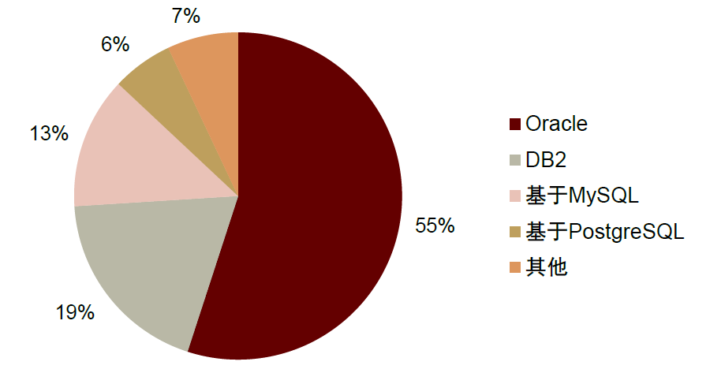
资料来源：IDC，信通院，中金公司研究部
下游重点行业的客户特征解析
金融、政务、公共事业、制造、医疗等为价值量贡献较大的下游行业客户。金融始终是中国数据库及大数据应用最大的细分行业市场之一。此外，在关系型数据库市场中，政府、公共事业(电信、能源、交通)和制造等行业贡献靠前，与金融一起占据了超80%的市场空间；在大数据应用市场中，医疗、政务、互联网和教育贡献靠前，Top5行业亦占据了整体约70%的市场空间。
图表：按照下游客户所在行业分类的关系型数据库市场规模，2019-2024e
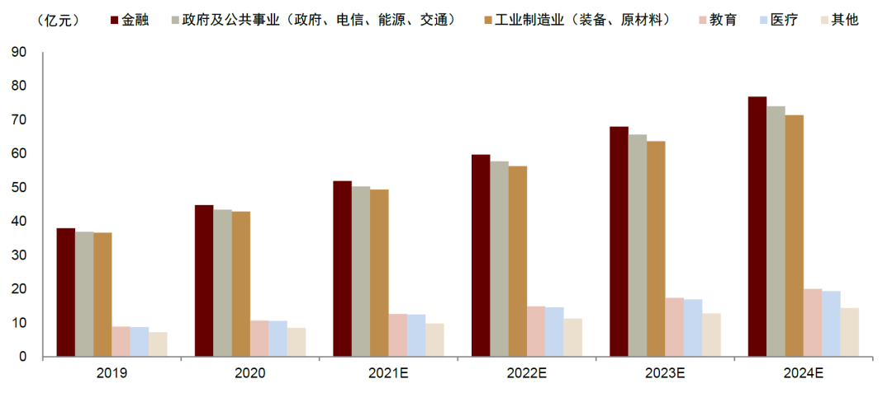
资料来源：Frost & Sullivan，信通院，中金公司研究部
金融&电信：价值量大、技术要求高、迁移难度大
数据一致性要求高，存量系统中海外成熟关系型数据库产品占比高，系统复杂、迁移难度较大。传统金融机构(银行、证券、保险)和电信运营商是支撑国民经济正常运行的关键行业，且合规、监管较严格，对数据一致性要求很高，核心业务系统以关系型数据库为主。同时，金融、电信业务极为复杂，核心系统作为业务底座涉及与上层应用、其他分析或技术平台数据交互的问题，迁移、改造难度较大，一般均会采用双轨并行、逐步替换的方式。
金融业务与大数据深度融合，是未来发展的核心竞争要素之一。除了满足日常交易需求的数据库以外，金融机构拥有庞大的客群基础，积累了大量非结构化的行为数据等，蕴藏了丰富的客户偏好、社会关系等信息资源，若能充分利用将有效提高业务效率、风险防范水平等。目前金融大数据已经在信贷风险评估、供应链金融、骗保识别等领域得到广泛应用，大数据应用分析能力正在成为金融机构未来发展的核心竞争要素之一。
政务：看重服务、数据安全、自主性
存量市场国产替代需求急切，增量市场持续受益于数字政府能力建设持续投入。一方面，电子政务的建设使得政府机构对信息系统的依赖性及信息安全标准越来越高，数据库作为其中的核心软件，需要自主掌握源代码控制权。另一方面，自2015年起针对政务大数据产业发展的相关政策紧密出台，目前政务数据量已经初具规模，大数据技术也日趋成熟，是政务大数据发展的良好时期，但仍然需要解决部门之间存在壁垒、数据标准不统一、数据孤岛等问题以更大程度地发挥数据价值，推进政府数字化转型，最终实现服务精准化、高效化、一体化。
政务场景下选型看重服务、数据安全保障等。我们认为政务场景下业务逻辑相对简洁，对于数据一致性、时延等的容忍度高于金融/电信场景，但由于政务行业本身IT能力储备相对较弱，而数据库相关工具部署、使用门槛较高，因此需要数据库厂商提供较多服务支持，同时政务场景的特殊性使其对于供应链安全、数据安全等格外重视。
互联网：IT能力强、多自研、对国产商业化数据库需求相对较少
互联网巨头在云数据库时代扮演者IT基础资源提供者和数据库开发创新者的角色。一方面，互联网巨头凭借自身服务器资源、技术人才储备、资金充裕等优势，出于业务协同、战略布局、开源创收等考虑纷纷下场云计算；另一方面，互联网业务的发展反哺数据库系统的创新，随着业务的扩大传统的商用数据库成本过于高昂，倒逼国内大厂去“IOE”走上自研道路，而大厂丰富的业务、海量的数据和技术人才储备也为自研数据库提供场景和条件。
互联网中小企业数据库选型时对开源、公有云、NoSQL接受度高，对国产商业化数据库产品和运维服务需求相对较小。互联网企业文化更加开放，并且自身IT能力较强，其特殊的业务场景往往需要NoSQL支撑，此外中小互联网企业一般面临资金、人员有限，场地不足，业务爆发快等问题，云计算服务能够匹配中小互联网企业的IT基础设施需求，使其专注于业务层面拓展。因此互联网企业对于开源、NoSQL、公有云等新技术趋势接受度更高，更愿意采用开源数据库并进行二次开发，往往是开源社区的重要贡献者。
数据库的中外差距在何处？
从发展史看，国内滞后海外二十年
我国第一个自主知识产权数据库成型于1988年，滞后于海外20年。我们在《数据库系列报告开篇：技术路径复盘及展望》中对数据库发展史进行了详尽复盘，回溯数据库近70年的历史，可以看到在早期数据库跨时代的事件中鲜有中国厂家或者学术研究者的身影。早在1968年，IBM推出了世界上首个大型商用数据库IMS.对比来看，我国的数据库技术研究起步于1980年前后；到1988年武汉达梦推出第一个国产自主版权数据库，我国数据库产品的商业化进程滞后于海外二十年。
从产品迭代视角来看，Oracle等海外龙头进入国内市场时其产品已然成熟，而国内产品化刚起步。从1979年到1989年Oracle进入中国市场的时间节点，Oracle数据库已经迭代到第六版，不仅实现了行级锁、在线备份和恢复、增强可扩展性等核心性能与商业特性，而且完成了PL/SQL这一Oracle自有的SQL“方言”的拓展，产品历经20年的打磨已然成熟。而彼时国内数据库尚处于学术研究起步、积累阶段，海外厂商迅速在电信、金融、政务等重要行业拿下大单、近乎垄断。
图表：国内外数据库产品迭代对比图
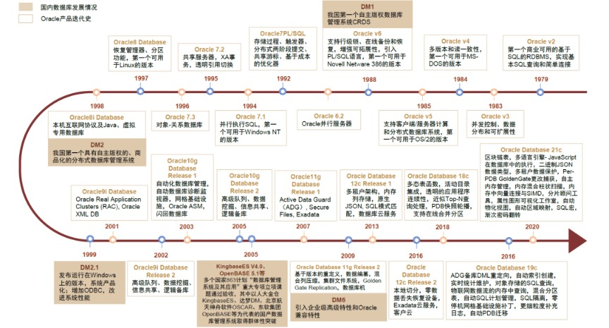
注：以上图表仅选取部分厂家、部分产品版本内容，根据公司官方公开数据整理，具体信息以公司公告为准
资料来源：公司公告，公司官网，中金公司研究部
Oracle垄断集中式关系型数据库“事实标准”
在商用市场，SQL+“方言”助力Oracle掌握行业“事实标准”。SQL语言在1986年被美国国家标准学会纳为关系型数据库的标准语言，后被国际标准化组织(ISO)采纳为国际标准成为事实上操作关系型数据库的行业标准。而Oracle(时称Relational Software， Inc.)早在1979年即开发出世界上第一款商用的基于SQL的关系型数据库。Oracle数据库此后乘SQL国际标准之风大阔步迈入企业级市场。同时，Oracle通过扩展SQL语言形成自己的“方言”体系——高度兼容SQL的高级数据库程序设计语言PL/SQL，给自己的数据库赋予了更多商用增强便捷功能。通过40余年的落地、推广与生态培养，Oracle数据库在主导集中式关系型数据库市场的同时，也将自有的“方言”SQL体系成功扶持为事实上的行业标准。
在开源市场，Oracle收购MySQL已然获取开源社区的话语权。MySQL 1.0发布于1996年，在2000年采用GPL协议进入开源的世界。如我们在前一章所述，时至今日，MySQL是世界范围内最受欢迎的开源数据库之一。2009年，Oracle通过收购成为了MySQL的法律主体，具有变更开源协议的权力。至此，数据库世界开源与商业的汩汩溪流汇入Oracle的大河，Oracle一方面通过产品迭代不断打磨关系型数据库的性能，另一方面通过开源社区汇集了多方生态，一步步加强在数据库市场的话语权。
图表：Oracle扩展的“方言”体系PL/SQL特点概览
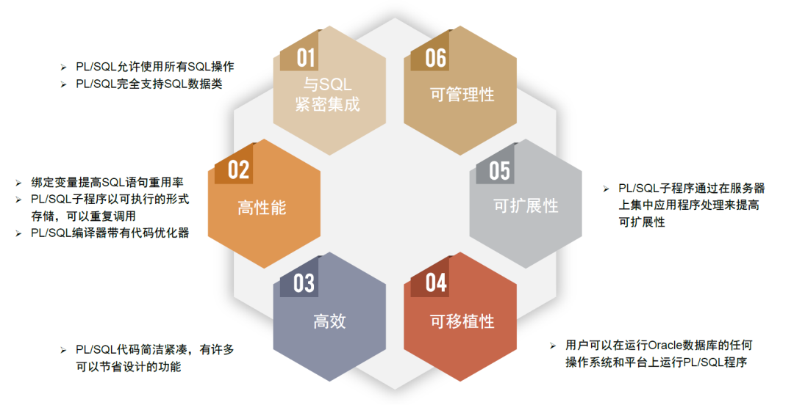
资料来源：《Oracle数据库原理及应用》(2019，李然等)，中金公司研究部
构建人才与产业链上下游生态是基础软件构筑壁垒的必经之路
商业成功与人才生态相互促进，Oracle全球拥有百万量级的开发者队伍。数据库相关知识体系庞杂艰深、壁垒高，不同产品、技术路径需要单独额外学习，而在设计、建设、运维的各个实践环节都需要大量的专业人才。完善的培训、社区、认证体系、DBA和运维人才的充足供给保障数据库产品的最佳实践，而数据库产品商业繁荣带来的就业机会和优厚薪酬又激励人才供给，形成正向循环。
海外巨头通过收并购不断夯实基础能力，扩展产品生态。从产业链的角度来看，数据库除了锤炼自身的技术实力之外，对接上游需要接入服务器和存储、网络等IT基础资源，沿产业链下游支撑各行各业的应用软件系统。我们复盘Oracle、IBM、微软等数据库产品供应商发展史都会发现，各海外巨头均通过大量收并购补充基础技术实力、拓展生态应用。
图表：Oracle的收购版图
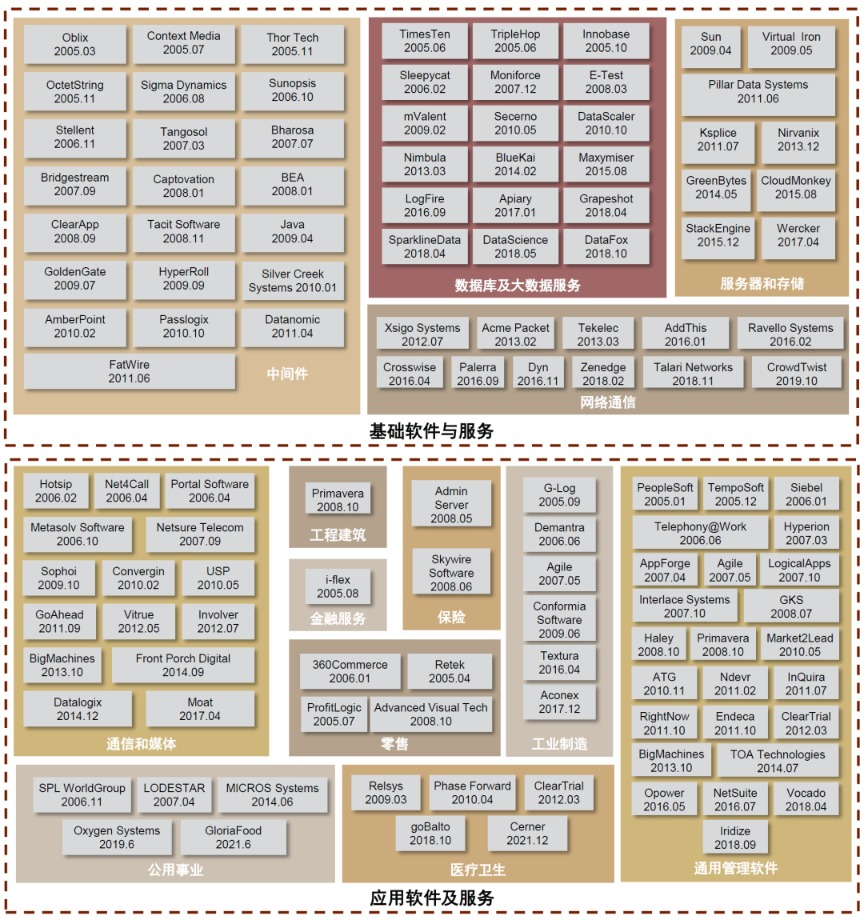
注：统计截至2021年12月31日，具体信息以公司公告为准。
资料来源：公司公告，公司官网，中金公司研究部
数据库的关键成功要素是什么？
技术为先
过硬的技术实力是在竞争中立稳脚跟的前提。数据库、大数据等是典型的智力密集型行业，具有研发投入大、研发周期长、技术壁垒高等特点，且随着5G、云计算和人工智能等新兴技术的深入发展，数据库、大数据相关技术升级迭代加快，需要供应商准确把握新技术发展动向和趋势，持续投入，并将新技术与现有的技术平台和核心产品有效结合。而落到具体考察的技术指标上，可以参考《中央国家机关2021年数据库软件协议供货采购项目征集公告》，其分别对事务型、分析型数据库系统评价体系做出明确要求。
图表：央采2021事务型数据库(OLTP)评价指标
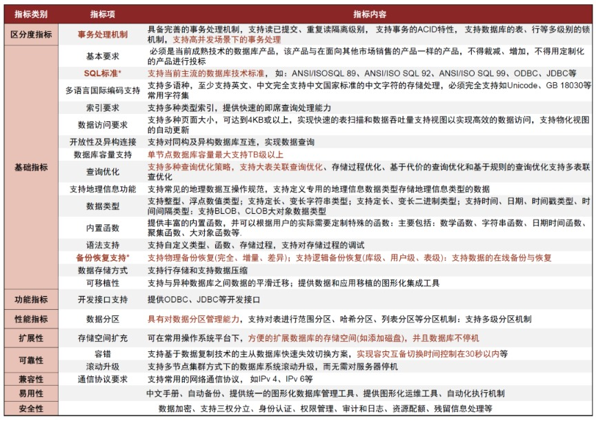
资料来源：《中央国家机关2021年数据库软件协议供货采购项目征集公告》，中金公司研究部
下游客户实际选型过程中除了参考第三方性能测试结果以外，往往都会进行POC测试。正如我们在数据库开篇报告《数据库系列报告开篇：技术路径复盘及展望》中介绍的，TPC是为数据库提供权威性能测评的第三方机构，目前国内仅有少量产品如Oceanbase、南大通用的Gbase和星环科技的ArgoDB等进行了相关测试。但由于数据库性能对硬件配置、业务环境、参数设置等都高度敏感，且不同客户有个性化的需求侧重，因此实际选型过程中企业都倾向于在自己配置的环境中进行POC测试以此来比较不同竞品的技术实力。
核心期刊论文发表数量、专利数量也是衡量厂商技术实力的另一抓手。学术研究一直是数据库技术发展的重要支撑体系，学术界公认的数据库领域顶级会议为VLDB、SIGMOD和ICDE，我国在全球数据库领域学术影响逐渐提升，阿里、华为、腾讯、蚂蚁金服、百度、PingCAP等企业论文入选。专利是企业知识产权成果积累与商业化保护的重要手段，我国数据库企业自研技术发展历史相对较短，截至2021年6月，全部企业技术专利累计仅千余，平均专利数量不足五十个，整体与海外成熟厂商水平差距较大，但仍有小部分领先国产厂商已累计百余专利。
服务筑基
数据库技术体系庞杂，对专业度要求高，传统行业客户往往需要全方位服务。数据库部署涉及对底层硬件/操作系统、上层应用及业务逻辑等的适配，且目前国产化替换通常需要迁移，对服务人员的专业能力、工作经验都提出要求。传统行业尤其是金融、电信、政府、制造、交通等，企业内部精通数据库的IT人员稀缺，因此尤其依赖外部服务。过去海外数据库巨头在拓展中国市场时，通常直接和专业的本土服务商进行合作，目前国产数据库厂商基本都有自己的服务团队也会与服务商合作拓宽覆盖范围。以星环科技为例，据其最新招股书披露，2018-2020年度公司软件产品授权及配套服务和技术服务相关收入占比合计达到56.24%、53.45%、50.86%。
数据库服务能力涉及售前、售中、售后各方面。信通院在数据库服务能力成熟度模型中将所需服务分为规划设计、实施部署和运维运营三大块，专业的数据库服务商通常需要提供全流程的服务覆盖，而对于国产数据库厂商来说，服务范围一般包括：1)售前支持：方案制定、产品定制化、咨询服务；2)现场支持：实施测试、售后服务、定期巡检；3)远程服务：互联网支持服务、7*24电话支持服务、邮箱、社交媒体等；4)专家培训：专业的培训讲师、配套的培训教材、现场操作培训。
生态加持
数据库向下适配硬件、操作系统，向上支撑各类应用，运维人才、配套工具保障最佳实践，生态支持是其商业成功的重要加持。Oracle在早期能拉开与DB2、SQL server的差距，很大程度上受益于其开放的生态，虽然是闭源产品，但Oracle开放大量接口且内部操作可供DBA追踪分析，培养起丰富的人才资源，衍生出大量围绕Oracle提供产品和解决方案的服务类厂商、生态工具厂商，其生态繁荣与商业成功相辅相成。
开源和云能够加速生态圈的建立，国产数据库厂商积极开源、上云。开源数据库源代码开放、有详细的产品文档和良好的社区生态，企业可以无成本试用，因此具备用户群体广、传播速度快的特点，能够帮助初创厂商加速传播获客、加速生态建立。巨杉数据库、Oceanbase是国内最早开源的数据库厂商，而后自2019年起华为、腾讯、阿里陆续将自家的数据库开源。此外云计算时代，云数据库可以借助云基础平台，而无需从头建立生态，从而避免生态短板、快速进行商业变现。我国主流数据库厂商均有云产品或云适配相关布局。
图表：国产数据库厂商开源情况
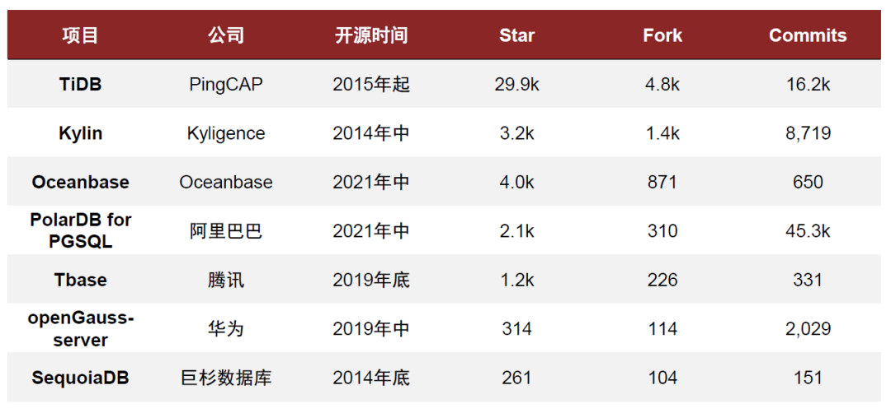
资料来源：CSDN，Github，中金公司研究部
注：统计时间截至2021/12/19
国产数据库厂商产品流行度概览
国产厂商厚积薄发，从学习追赶到颠覆式创新。墨天轮数据显示，截至2021年12月，TiDB、openGauss、达梦分别位居国产数据库流行排行榜Top3；前11席位中，云厂商贡献5席，人大金仓、武汉达梦和南大通用均在列，此外还有初创厂商TiDB、中兴通讯和从阿里云中独立的Oceanbase.从数据模型角度，上榜产品均以关系型为主，但除了传统架构以外，近年国产数据库厂商积极创新，贡献了不少原生分布式、云原生的产品，其中TiDB更是目前最炙手可热的NewSQL产品，其流行度得分也遥遥领先。
图表：国产数据库流行排行榜Top10
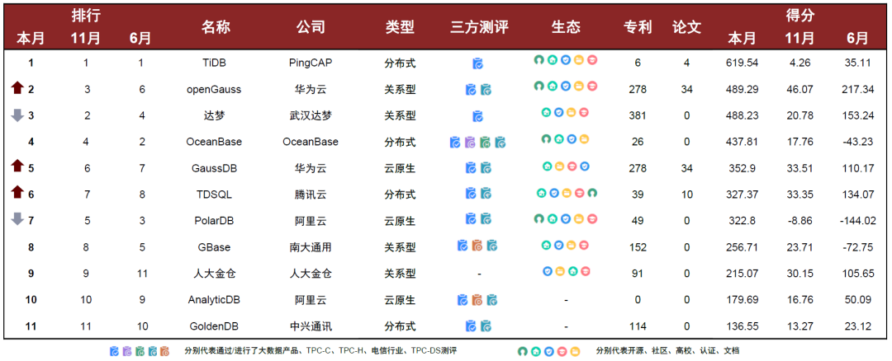
资料来源：墨天轮，中金公司研究部
注：上表中产品从数据模型角度均为关系型，上表类型分类中的“关系型”特指非原生分布式、非云原生的传统关系型；openGauss特指开源项目，GaussDB指企业级产品，时间截至2021/12；评价维度主要包括搜索引擎、趋势指数、三方测评、生态(社区、高校合作、培训认证、开放文档等)、就业机会等